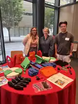
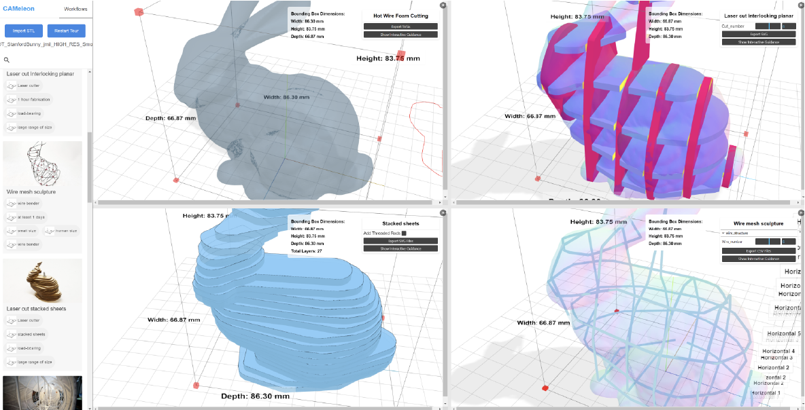
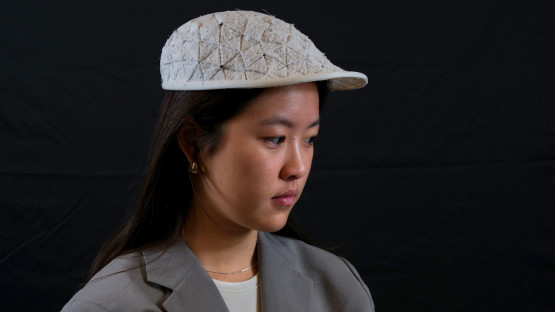
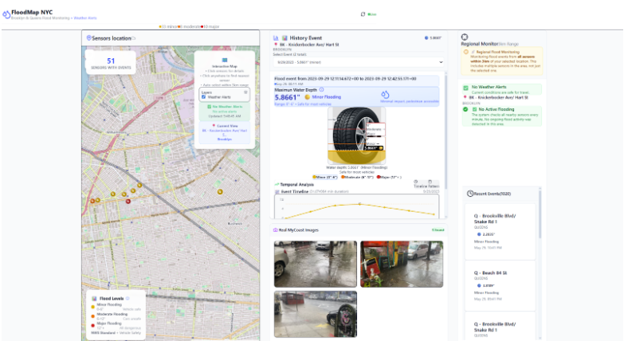
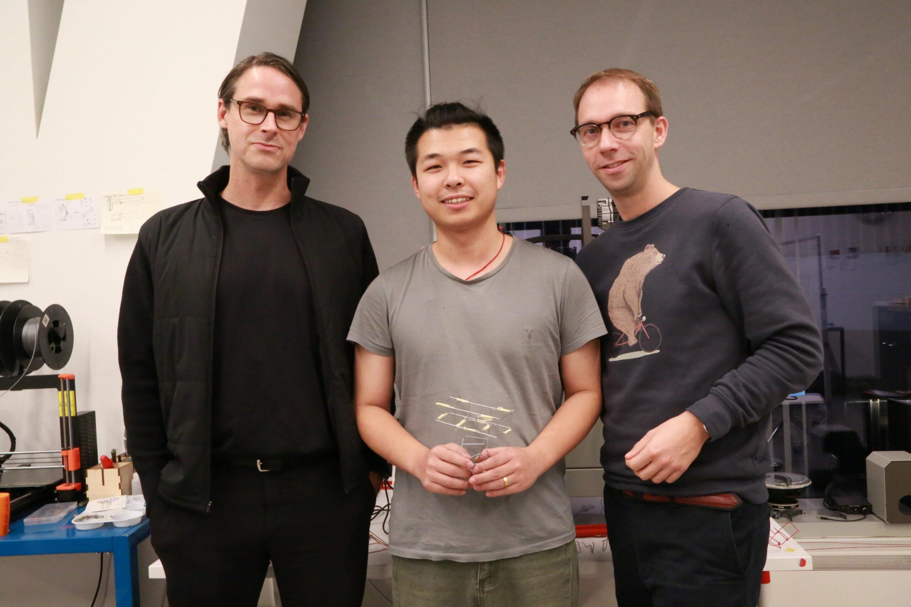

News archive
Earlier announcements retained for visitors following links from the previous website.
Presented the TOM assistive technology search engine with Maayan Keren and the TOM Global team at Cornell Tech's AI and Accessibility Summit 2026 ↗.

AI and Accessibility SummitCAMeleon appeared at ACM CHI 2026 in Barcelona. Project overview ↗ · Paper ↗

CAMeleonOriStitch research featured in Cornell News ↗.

Image from Cornell NewsY-AR and OriStitch presented at the ACM Symposium on Computational Fabrication. See the research projects ↗.
Completed the PiTech fellowship with NYC flood-preparedness work featured in a Cornell spotlight ↗.

Image from Cornell PiTech spotlightPiTech PhD Impact Fellowship with the NYC Mayor's Office of Climate & Environmental Justice. Flood dashboard ↗
CAMeleon and Y-AR preprints released. CAMeleon preprint ↗
Invited talk at Cornell Tech XR Collaboratory.
Invited talk at Carnegie Mellon University, 62-706 Generative Systems for Design.
XR Collaboratory Prototyping Grant. Announcement ↗

Image from Cornell Tech
For current research and publications, return to the Research section.